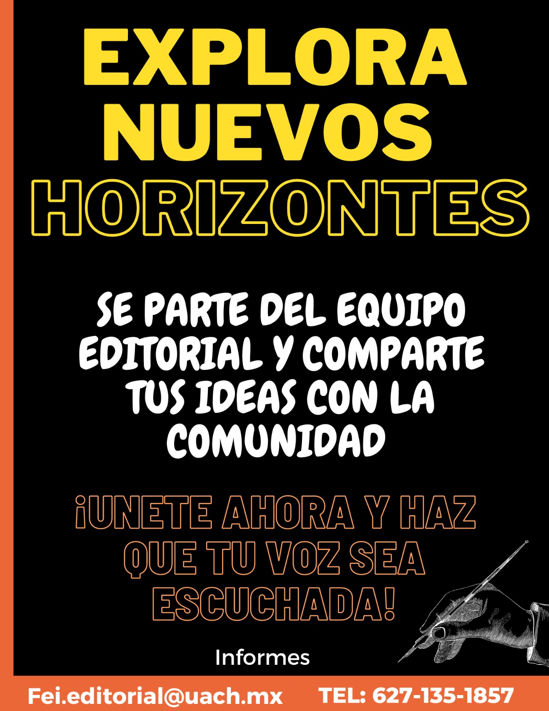

Conformacion del comite editorial Fei y la revista univercitaria Horizonte

La Facultad de Economía Internacional de la Universidad Autónoma de Chihuahua conforma la revista universitaria "HORIZONTE" proyecto iniciado por el comité editorial de la FEI, inicia su convocatoria para realizar publicaciones y conformar el comité editorial.
La revista inició como iniciativa de alumnos de la Facultad de Economía Internacional, quienes iniciaron la conformación del Comité editorial, con el objetivo de incentivar el aprendizaje de las nociones básicas de investigación en sus miembros y difundir los trabajos escritos de los alumnos.
La iniciativa prosperó con el valioso apoyo de la Maestra Olinda Ornelas, Directora de la Facultad, la Maestra Elsy Denisse Martínez, Secretaria Académica y el Maestro Omar Varela secretario de Extensión y Difusión Cultural. La mencionada Revista Universitaria llevará por nombre "Horizonte" y pretende recopilar notas de interés para los universitarios, así como diversos escritos y gráficos elaborados por la comunidad.
La revista cuenta con diversas páginas de internet, en las cuales se publican notas relevantes y de interés para la comunidad. Los miembros de la revista iniciaron una convocatoria para los alumnos que quieran integrarse al comité editorial o a las actividades de las paginas de la revista; entre los trabajo que la revista reciben para su publicación se encuentran:
Los trabajos recibidos, serán revisados por el Comité editorial para su publicación, los archivos enviados se piden en archivo editable en procesador de textos de Word.
